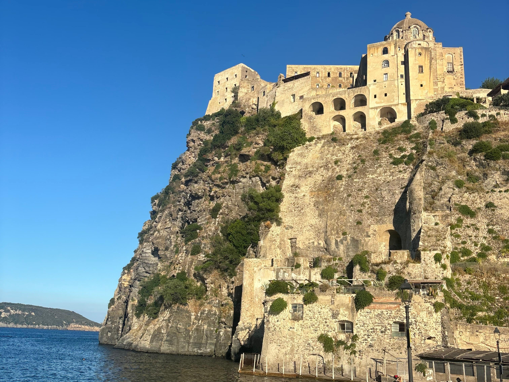
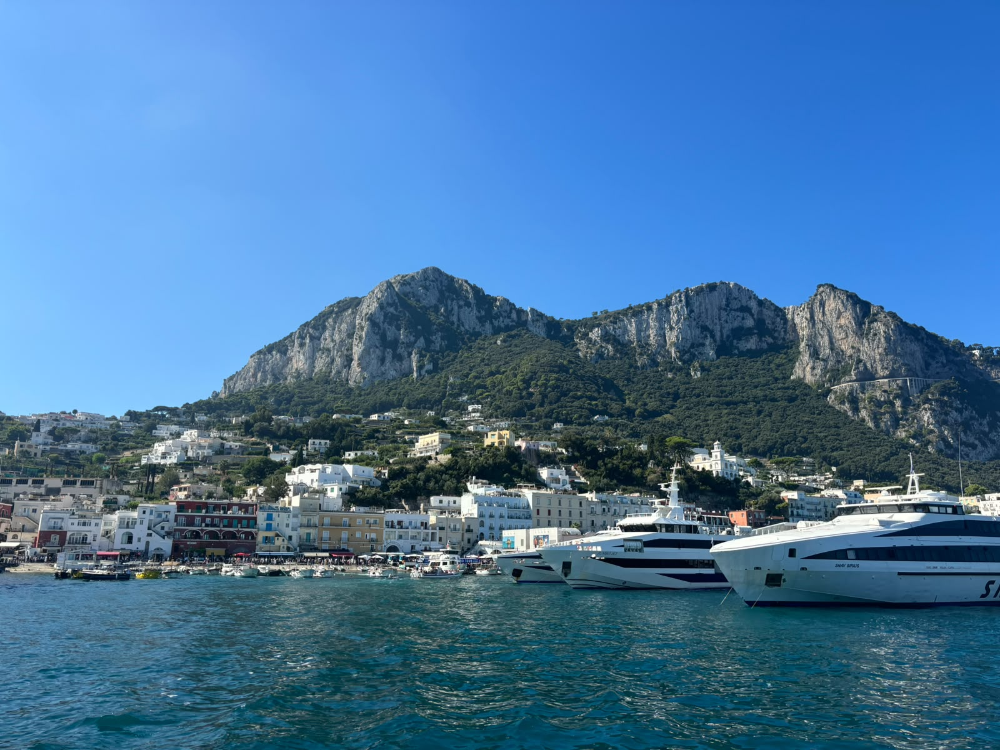
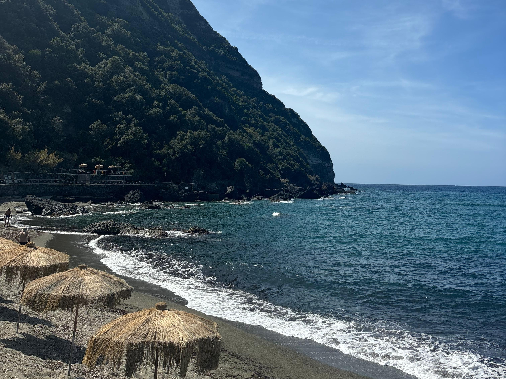

המדריך למטייל בדרום איטליה
דרום איטליה מציעה שילוב בין היסטוריה עשירה, עיירות ציוריות התלויות על צוקים, איים ונופים מרהיבים, לצד אוכל מעולה ואווירה איטלקית אותנטית. אם אתם מחפשים חופשה עם אווירה קיצית וקסומה שתאפשר לכם להתנתק ולנוח, זה היעד בשבילכם.



| נושא | מידע |
|---|---|
| עונה מומלצת | מאי עד אוקטובר |
| מטבע | אירו (€) |
| משך שהות מומלץ | 6-8 ימים |
| שפה | איטלקית ואנגלית |
| יעדים פופולארים | נאפולי, סורנטו, פוזיטנו, אמלפי, האי קאפרי, האי איסקיה |
יעדי חובה בדרום איטליה
-
העיר העתיקה של נאפולי (Napoli)
הלב הפועם והתוסס של דרום איטליה. עיר מלאה באנרגיה ברחובות, סמטאות צרות ומלאות חיים, היסטוריה בכל פינה וכמובן הפיצה הנפוליטנית המקורית והטובה בעולם.
-
סורנטו (Sorrento)
עיירת נופש תוססת הניצבת על מצוק מעל המפרץ. היא משמשת כבסיס מעולה לטיולי יום באזור לעיירות הסמוכות, ומלאה בסמטאות מזמינות, בוסתני לימונים ודוכנים מקומיים.
-
פוזיטנו (Positano)
עיירת חוף מפורסמת ויפהפייה הבנויה במדרון תלול, עם בתים צבעוניים, סמטאות ציוריות מלאות חנויות בוטיק קטנות ותצפיות מדהימות על הים.
-
אמלפי (Amalfi)
עיירה היסטורית שיש בה מרכז עתיק ומקסים, קתדרלה מרשימה במיוחד בראש גרם מדרגות רחב, וטיילת עם בתי קפה ונופים מרהיבים לים.
-
האי קאפרי (Capri)
אי יוקרתי ומפורסם עם אווירה חגיגית, מי טורקיז צלולים, סמטאות אלגנטיות, תצפיות אל סלעי הענק המפורסמים בלב ים ומערת התכלת הידועה.
-
האי איסקיה (Ischia)
אי געשי יפהפה המפורסם במעיינות חמים ומרחצאות טבעיים, חופים רחבים ונעימים, כפרי דייגים ציוריים וטירת ארגסונה המרשימה הניצבת על סלע בלב ים.
טיפים למטייל
-
התניידו בלי רכב ברצועת החוף -
בכבישים של חוף אמלפי הפקקים כבדים ומציאת חניה היא עסק יקר ומסורבל. הדרך הנוחה ביותר להתנייד בין העיירות באזור (פוזיטנו, אמלפי וסורנטו) היא באמצעות מעבורות או אוטובוסים מקומיים. -
הצטיידו בנעלי הליכה נוחות -
העיירות באזור, במיוחד פוזיטנו וסורנטו, בנויות על צוקים ומדרונות תלולים ומלאות בגרמי מדרגות ארוכים ובסמטאות מרוצפות אבן. -
הזמינו כרטיסים למעבורות מראש בחודשי הקיץ -
בחודשים יולי ואוגוסט הביקוש למעבורות לקאפרי ולאיסקיה גבוה מאוד, לכן מומלץ להזמין כרטיסים מראש כדי להבטיח מקום בשעות הנוחות לכם.